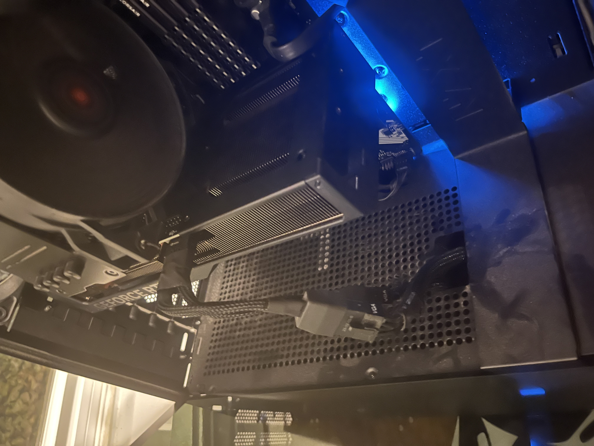
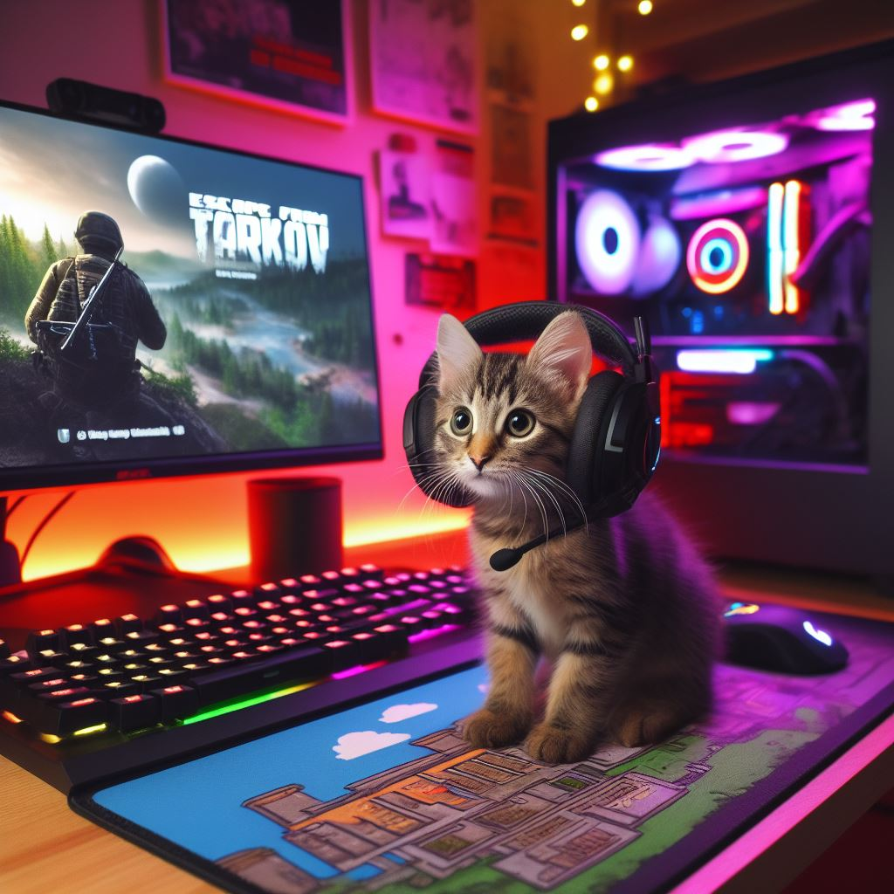

Gaming
Hey there, let me introduce you to my awesome computer setup! It's packed with some serious power: First up, we've got the AMD Ryzen 5800X processor. With its 8 cores and 16 threads, it's like having a turbocharged engine under the hood, making everything from gaming to multitasking feel super smooth and responsive. And check out the NVIDIA GeForce RTX 4070 Super graphics card! This thing is a beast, delivering jaw-dropping visuals and buttery-smooth gameplay. It's like stepping into a whole new world every time I fire up a game. Together, these components make for one heck of a gaming rig. Whether I'm diving into the latest titles or tackling demanding tasks, my computer is always up to the challenge, ready to take my experience to the next level. It's not just a computer, it's my ultimate gaming companion!
Escape from Tarkov
Welcome to the intense world of Escape from Tarkov, where survival is key and every decision counts. Here's why this game is an unforgiving looter shooter like no other:
- High-Stakes Survival: In Tarkov, you're dropped into a war-torn city with one goal: survive. But it's not just about avoiding enemies – you'll also need to scavenge for supplies, manage your health and resources, and navigate the treacherous environment to stay alive.
- Realistic Combat: Get ready for some of the most realistic combat mechanics in any game. From gun handling to ballistics, every aspect of combat feels authentic and immersive. Whether you're engaging in intense firefights or sneaking past enemies, every encounter is a pulse-pounding experience.
- Deep Looting and Progression: Tarkov is all about the loot, and there's no shortage of it to be found. Explore abandoned buildings, raid enemy strongholds, and scavenge gear from fallen foes to build up your arsenal. But be warned – losing your gear in a firefight means losing it for good, adding an extra layer of tension to every encounter.
- Player-Driven Economy: In Tarkov, the economy is entirely player-driven. Everything from weapons and ammo to medical supplies and gear is bought and sold by players in a dynamic marketplace. It's a ruthless world where supply and demand dictate prices, and savvy traders can turn a tidy profit.
Escape from Tarkov is not for the faint of heart, but for those willing to brave its challenges, it offers an adrenaline-fueled experience unlike any other. So gear up, lock and load, and prepare to test your skills in one of the most unforgiving looter shooters around.